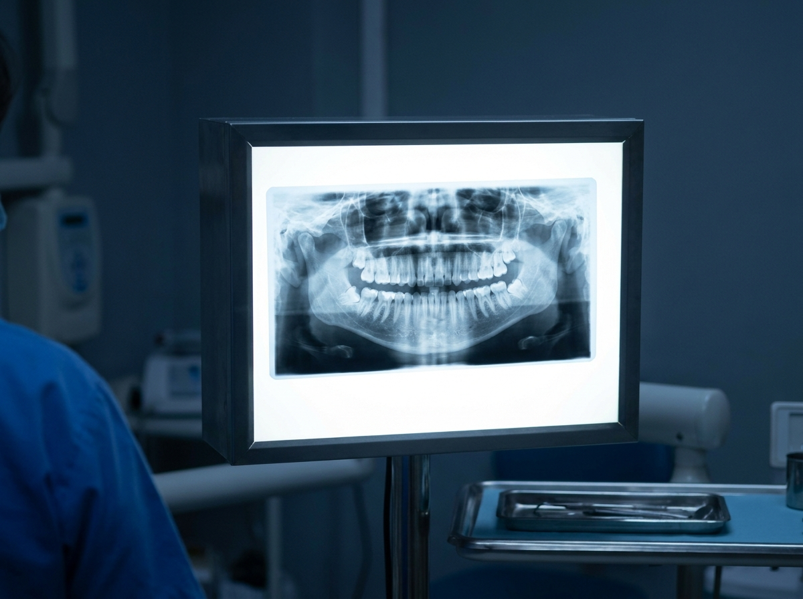
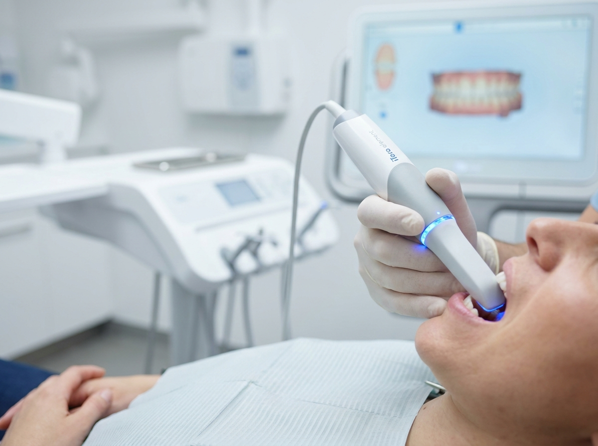
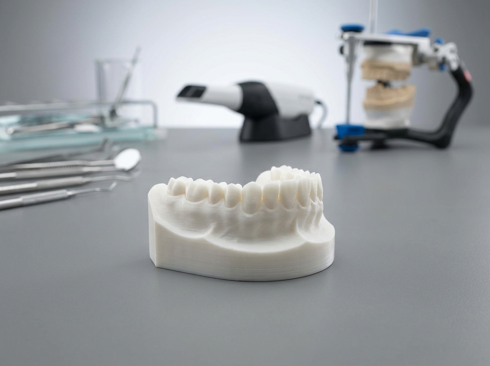

Lázaro Cárdenas, Michoacán · Villa de Álvarez, Colima
Tu aliado diagnóstico en cada tratamiento.
Centro de diagnóstico odontológico especializado en radiología dental avanzada. Tecnología digital, atención humana y acompañamiento clínico para doctores y sus pacientes.
Servicios principales
Estudios precisos para diagnóstico, planeación y tratamiento dental.

01Panorámica digital
Visión completa del arco dental, estructuras óseas maxilares y relación dentomaxilar. Estudio base para diagnóstico y planeación de tratamientos.
 02
02
Tomografía 3D CBCT
Estudio volumétrico de alta resolución para implantología, ortodoncia, endodoncia, cirugía maxilofacial y análisis de estructuras complejas en 3D.

03Escaneo intraoral digital
Registros digitales de arcadas sin moldes con tecnología iTero. Mayor comodidad para el paciente y flujo digital directo para el doctor.

04Modelos en resina 3D
Modelos físicos de alta precisión derivados de registros digitales para análisis, presentación de casos y apoyo en la planeación clínica.
Experiencia del paciente

Cuidamos a tus pacientes como parte de tu equipo.
El paciente llega a Radio Imagen y siente que fue enviado a un lugar confiable, ordenado y humano. Eso refuerza la imagen de tu consulta.
Cada estudio va acompañado de la información clínica del doctor. Sin confusiones, sin hojas perdidas, con seguimiento desde el portal.
Los estudios se liberan directamente al portal del doctor, quien puede consultarlos y descargarlos cuando estén listos.
Panorámica, tomografía, escaneo, modelos y análisis cefalométrico en una misma ruta de atención para el paciente.
Programa Socios Radio Imagen
Herramientas y beneficios para los doctores que confían en nosotros.
Cada paciente que envías activa beneficios clínicos, herramientas digitales y acompañamiento que fortalecen tu consulta.
Entrar al portalSocio Activo
- Acceso a plataforma iTero
- Xelis Dental Viewer
- Sidexis Dental Viewer
- Kit digital de inicio
- Capacitación 1 a 1
Socio Plata
- Consulta de redes sociales con IA
- Cortesías mensuales en estudios
- Kit de contenidos para pacientes
- Plantillas personalizadas
Socio Oro
- Dashboard mensual de desempeño
- Sesión bimestral de estrategia
- Capacitación grupal para tu equipo
- Material co-brandeado
Socio Diamante
- Plan trimestral con KPIs
- Capacitaciones privadas
- Webinars co-brandeados
- Atención prioritaria
Sucursales y horarios
Acude o agenda en la sucursal más cercana.
Lázaro Cárdenas, Michoacán
Morelos 32, Col. Ejidal, C.P. 60953
Ciudad Lázaro Cárdenas, Michoacán.
- Lunes a viernes
- 9:00 – 14:00 · 16:00 – 20:00
- Sábado
- 9:00 – 14:00
- Fuera de horario
- Atención por WhatsApp
Villa de Álvarez, Colima
Paseo Miguel de la Madrid Hurtado 271
Real Hacienda, C.P. 28978, Villa de Álvarez, Colima.
- Lunes a viernes
- 9:00 – 14:00 · 16:00 – 20:00
- Sábado
- 9:00 – 14:00
- Fuera de horario
- Atención por WhatsApp
Más que estudios, respaldo para tu diagnóstico.
Somos el aliado diagnóstico de los doctores que buscan elevar su consulta con tecnología, precisión y atención profesional.